Manual do Vésper
Tudo o que você precisa para preparar a mesa, jogar e resolver os problemas mais comuns. Cada tópico funciona sozinho: use o índice ou a busca e vá direto ao ponto. As marcas Mestre e Todos dizem quem usa cada coisa.
Começar
Primeiros passos
O Vésper é uma mesa virtual de RPG que roda direto no navegador, sem conta e sem servidor. O computador do mestre faz o papel de servidor: os jogadores se conectam a ele por um código.
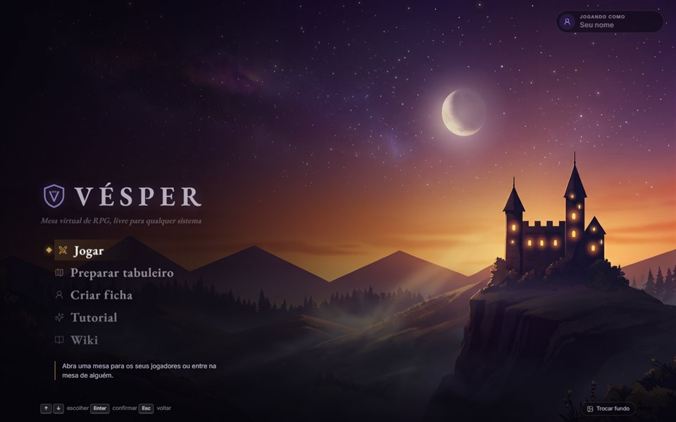
| Opção | O que faz |
|---|---|
| Jogar → Abrir mesa online | Você é o mestre: abre a campanha salva e gera o código para os jogadores. |
| Jogar → Entrar na mesa online | Você é jogador: digite o código que o mestre mandou. |
| Preparar tabuleiro | Abre a campanha sem conexão, para montar cenas, mapas e fichas antes da sessão. Mostra o nome da campanha que vai continuar. |
| Criar ficha | Abre a mesa sem conexão já com uma ficha nova de personagem. Dentro da mesa, a aba Fichas faz o mesmo. |
| Tutorial | O passo a passo interativo. Nada é salvo. |
| Wiki | Este manual. |
Se você é o mestre Mestre
- Escreva seu nome em Jogando como, no canto de cima da tela.
- Escolha Jogar → Abrir mesa online. Aparece um código de 6 letras, por exemplo
K7QX2M. - Mande o código para os jogadores, ou use Copiar convite no menu ⋯ para mandar o link pronto.
Se você é jogador Todos
- Escreva seu nome em Jogando como.
- Escolha Jogar → Entrar na mesa online, digite o código e aperte Entrar. Quem abre pelo link de convite já cai nessa tela com o código preenchido.
Clique em Trocar fundo no canto de baixo e escolha qualquer imagem do seu computador. Ela fica guardada só neste navegador. Fundo padrão volta para o castelo.
O mestre precisa manter a aba aberta durante toda a sessão. Se ele recarregar a página, os jogadores reconectam sozinhos em alguns segundos.
O tutorial interativo (opção Tutorial no menu inicial ou botão ? no canto do mapa) monta uma cena de exemplo e mostra onde clicar. Nada do tutorial é salvo.
Começar
A tela da mesa
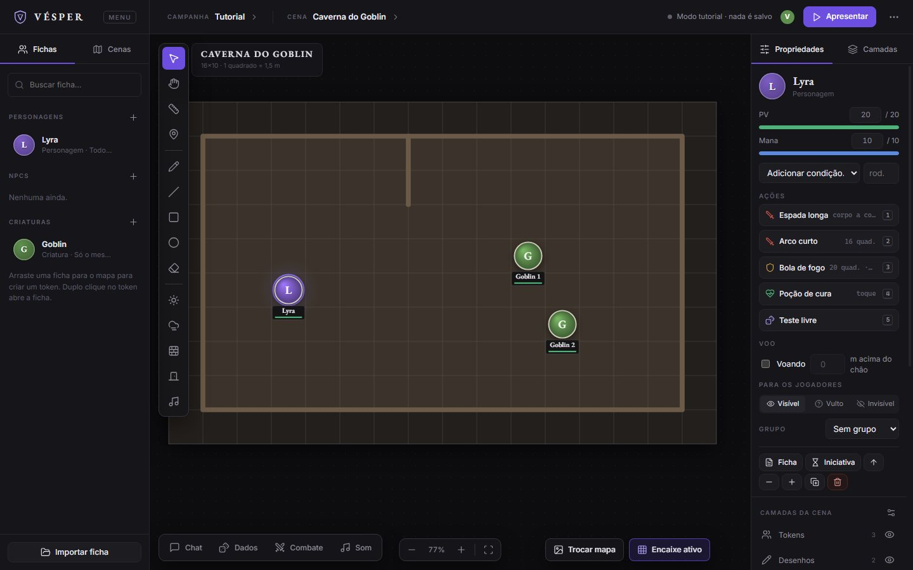
| Área | O que tem |
|---|---|
| Topo | VÉSPER no canto esquerdo volta ao menu inicial (também em ⋯ → Voltar ao menu inicial; a campanha é salva antes). Nome da campanha (abre o painel Mesa), nome da cena (troca de cena), jogadores online, Apresentar/Editar e o menu ⋯. |
| Esquerda | Fichas (personagens, NPCs e criaturas) e Cenas. |
| Ferramentas | A coluna ao lado do mapa: selecionar, mover câmera, régua, ping, desenho, névoa, paredes e portas. |
| Direita | Propriedades do token selecionado (vida, condições, luz, ações) e Camadas da cena. |
| Embaixo | O dock Chat · Dados · Combate · Som, o zoom e o encaixe no grid. |
Editar e Apresentar
Apresentar esconde as laterais e deixa só o mapa: é a visão de jogo. O painel do token passa a flutuar ao lado dele. Os jogadores entram sempre nesse modo. Clique em Editar para voltar às laterais.
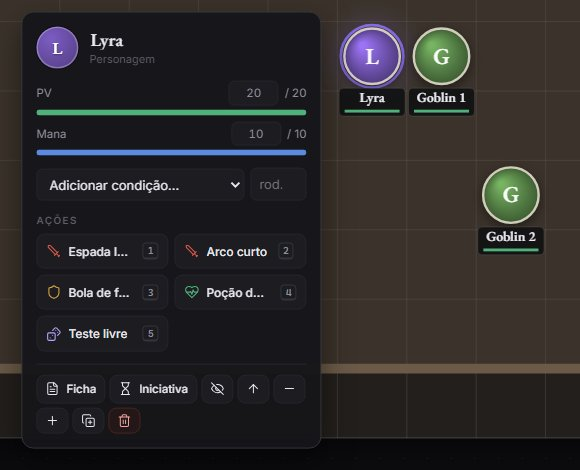
Começar
Salvar e levar a campanha Mestre
Tudo é salvo sozinho no navegador do mestre, a cada mudança. Para levar a campanha para outro computador ou guardar um backup, clique no nome da campanha no topo e use o painel Mesa.
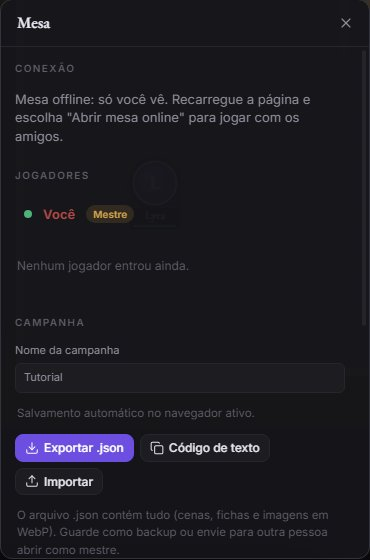
- Exportar .json: um arquivo com tudo (cenas, fichas e imagens). É o melhor backup.
- Código de texto: a campanha vira um texto para colar num bloco de notas ou mandar por mensagem.
- Importar: abre um .json ou um código de texto. Também serve para trazer só uma cena ou só uma ficha.
Monstros que você usa sempre podem ser exportados um a um: abra a ficha, vá em Configurar e clique em Exportar. Na próxima campanha, é só importar.
Jogadores não salvam a campanha. Para guardar a própria ficha, o jogador abre a ficha e usa Configurar → Exportar.
Voltar ao topoPreparar a mesa
Cenas e mapas Mestre
Cada cena é um mapa: uma taverna, uma caverna, um campo de batalha. Os jogadores veem a cena que o mestre deixar ativa.
- Na lateral esquerda, abra Cenas e clique em + (Nova cena).
- Clique na engrenagem da cena (Configurar cena) e em Enviar mapa… para escolher a imagem.
- Informe quantos pixels por quadrado a imagem tem e clique em Ajustar tamanho da cena. O grid se encaixa no desenho do mapa.
- Clique em Salvar.
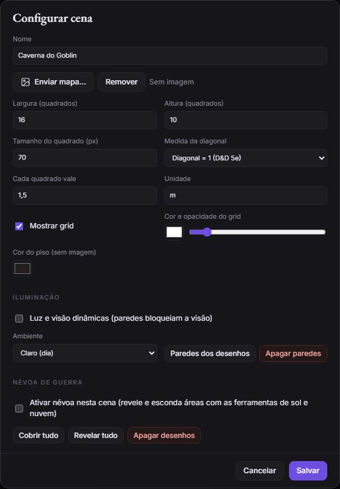
Um mapa de 2100 × 1400 pixels desenhado com quadrados de 70 px vira uma cena de 30 × 20 quadrados.
| Campo | Para que serve |
|---|---|
| Medida da diagonal | Diagonal = 1 (D&D 5e), Alternada 1-2-1 (Pathfinder) ou Real. Vale para a régua e para o alcance dos ataques. |
| Cada quadrado vale | Distância de um quadrado, com a Unidade. Ex.: 1,5 e m. |
| Cor do piso | Fundo da cena quando não há imagem. |
As imagens são convertidas para WebP e reduzidas sozinhas (mapas até 4096 px), então a campanha não fica pesada.
Imagens no mapa
Baú, fogueira, carroça, árvore, mancha de sangue, armadilha: imagens soltas que você coloca, move, gira e esconde quando quiser.
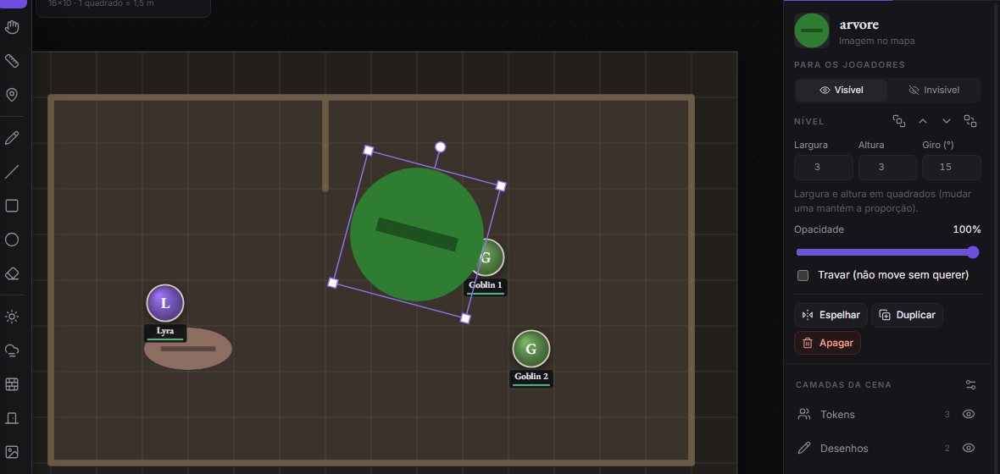
- Escolha a ferramenta Imagem I e clique em Enviar imagem…, ou arraste arquivos do computador direto para o mapa (dá para soltar vários de uma vez).
- A imagem entra encaixada no grid, com o lado maior em 2 quadrados e a proporção certa.
- Clique nela para mexer: arraste para mover, puxe os cantos para redimensionar (Shift deforma) e a bolinha de cima para girar (Shift gira de 15 em 15°).
| No painel da imagem | Para que serve |
|---|---|
| Visível / Invisível | Invisível só você vê (apagada e tracejada). Prepare a armadilha e revele na hora. |
| Nível | Trazer para frente, subir, descer, mandar para trás. Imagens e tokens dividem a mesma ordem. |
| Largura, Altura, Giro | Medidas exatas, em quadrados e graus. Mudar a largura ou a altura mantém a proporção. |
| Opacidade | Deixa a imagem transparente (uma poça, uma névoa). |
| Travar | A imagem não sai do lugar sem querer. |
| Espelhar, Duplicar, Apagar | Também pelos atalhos Ctrl+D (duplicar) e Delete (apagar). |
- Níveis: imagem nova entra por baixo dos tokens (objetos no chão). Para a copa da árvore cobrir o goblin, use Trazer para frente. O painel do token tem os mesmos botões de nível. O mapa de fundo e o grid ficam sempre embaixo de tudo.
- Imagens da campanha: nas opções da ferramenta Imagem ficam as miniaturas de tudo o que você já usou. Arraste para o mapa ou clique para colocar no centro da tela, em qualquer cena.
- Os jogadores veem as imagens visíveis, sem moldura e sem poder mexer. A névoa e a escuridão escondem as imagens como o resto do mapa. O jogador sempre vê o próprio token, mesmo debaixo de uma copa.
- A imagem não bloqueia a visão. Para uma carroça bloquear, desenhe uma parede por cima.
- As imagens vão junto quando você exporta a cena ou a campanha.
Mostrar aos jogadores
Uma carta, o retrato do vilão, um mapa do tesouro, uma pista: prepare antes da sessão e, na hora, mostre na tela dos jogadores com um clique.
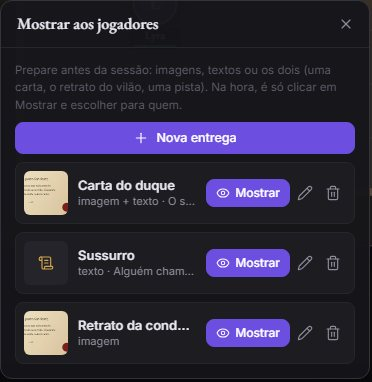
- No dock, abra Mostrar e clique em Nova entrega.
- Dê um título e coloque uma imagem (enviar do computador ou escolher da biblioteca), um texto ou os dois.
- Na hora do jogo, clique em Mostrar na entrega e escolha Todos ou Escolher jogadores.
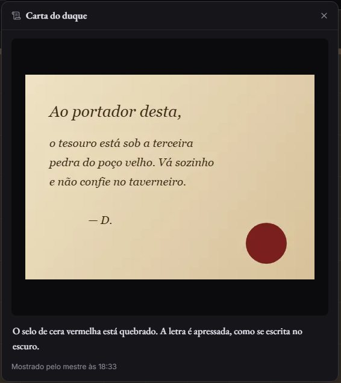
- Na tela de quem recebeu abre uma janela com a imagem e o texto. Dá para arrastar a janela e continuar mexendo no mapa. Cada jogador fecha a sua.
- Zoom na imagem: roda do mouse aproxima, arrastar move, dois cliques volta ao tamanho normal.
- No chat de quem recebeu fica a entrega com a miniatura; clicar abre de novo. Quem não foi escolhido não vê nada. Você vê no chat para quem mostrou.
- Quem mostra vê uma prévia da janela, igual à dos jogadores.
- As imagens das entregas também aparecem em Imagens da campanha, para usar no mapa.
Separar jogadores em cenas diferentes
Um jogador explora a cripta sozinho enquanto o grupo continua na taverna: cada um vê e ouve só a cena em que está.
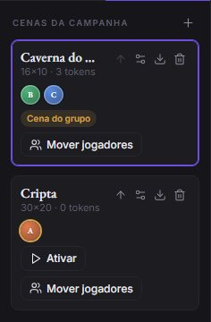
- Na cena para onde o jogador vai, clique em Mover jogadores.
- Marque um ou vários jogadores e clique em Mover. Eles passam a ver só aquela cena, e um aviso mostra para eles onde estão.
- Para trazer de volta, abra Mover jogadores na Cena do grupo e marque quem estava separado. Desmarcar alguém numa cena separada também o devolve ao grupo.
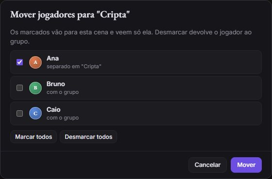
- Ativar leva só o grupo. Quem foi separado continua onde está.
- Jogadores separados ganham um contorno dourado na bolinha, e o topo da tela avisa quantos estão separados.
- Para conferir o que um jogador vê, use ⋯ → Ver a mesa como → o nome dele: a tela mostra a cena em que ele está.
- Chat, dados e combate continuam compartilhados. A música geral também; para uma trilha só da cena separada, use uma sala de som nela.
- Excluir uma cena devolve ao grupo quem estava nela.
Preparar a mesa
Fichas
A ficha é livre: não está presa a nenhum sistema. Crie pela lateral Fichas, no + de cada grupo. Abra com dois cliques no token ou pelo botão Ficha no painel do token.
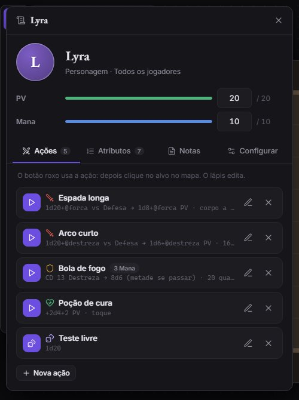
| Onde | O que tem |
|---|---|
| Topo | Retrato (clique para trocar), nome e as barras. No número da barra dá para digitar -7 ou +5. |
| Ações | Ataques, magias e curas. A ficha abre nesta aba, porque é a mais usada durante o jogo. |
| Atributos | Força, Destreza, Defesa… e as fórmulas de teste e de iniciativa. |
| Notas | Histórico, inventário, anotações. |
| Configurar | Tipo, quem controla, tamanho, cor, imagem, quais barras a ficha tem e o máximo de cada uma. Também Colocar no mapa, Duplicar, Exportar e Excluir. |
O que cada parte significa
| Parte | O que é | Exemplo |
|---|---|---|
| Tipo | Personagem, NPC ou Criatura. Define de que lado o token luta. | Lyra = Personagem |
| Controlado por | Quem pode mover e usar as ações: um jogador, todos ou só o mestre. | Todos os jogadores |
| Barras | Valores que sobem e descem. O nome é escolhido na lista da campanha. | PV 20/20, Mana 10/10 |
| Atributos | Escolhidos na lista da campanha. Nas fórmulas viram @nome, sem acento. | Força 3 vira @forca |
| Ações | Ataques, magias e curas. Veja Ações. | Espada longa |
Ninguém precisa adivinhar os nomes
O mestre define uma vez quais atributos e barras a campanha usa. Nas fichas e nas ações, esses nomes aparecem num menu, então o jogador só escolhe.
- Onde editar Mestre: clique no nome da campanha no topo (painel Mesa) e altere Atributos da campanha, Barras da campanha e Condições disponíveis: o × de cada etiqueta remove, e o campo embaixo adiciona (aperte Enter; colar "Força, Destreza" adiciona os dois). O botão Editar lista na ficha leva direto para lá.
- Ficha nova: já nasce com todos os atributos da lista (Defesa começa em 10). Personagens ganham todas as barras; criaturas, só a primeira.
- Adicionar: o menu + Atributo mostra só os que faltam na ficha, com a opção de adicionar todos de uma vez.
- Um nome que não está na lista aparece como (fora da lista). Escolha o nome certo no menu ou acrescente esse nome à lista.
Num sistema com Agilidade e Vigor, a lista pode ser Força, Agilidade, Vigor, Intelecto, Defesa e as barras Vida, Sanidade.
Personagem e criatura guardam a vida de jeitos diferentes
- Personagem: todos os tokens dele dividem a mesma vida. Tomou dano no mapa, a ficha mostra o dano.
- Criatura: cada token tem a própria vida. Uma ficha "Goblin" pode virar Goblin 1, Goblin 2 e Goblin 3, cada um com seu PV.
Para os ataques terem chance de errar, o alvo precisa de um atributo com o nome que a ação procura, normalmente Defesa. Fichas novas já nascem com Defesa 10.
Preparar a mesa
Tokens no mapa
- Colocar Mestre: arraste a ficha da lateral esquerda para o mapa. Jogadores podem colocar as próprias fichas.
- Mover: arraste o token, ou use as Setas. Segure Alt ao soltar para não encaixar no grid.
- Abrir a ficha: dois cliques no token.
- Remover Mestre: selecione e aperte Delete.
- Esconder Mestre: o botão do olho riscado no painel do token. Os jogadores deixam de ver aquele token.
Mudar a vida rapidinho
No campo de PV do painel do token, digite:
| Digite | Resultado |
|---|---|
12 | PV vira 12 |
+5 | cura 5 |
-7 | tira 7 |
-2d6 | rola 2d6 e tira o resultado |
Condições
Em Adicionar condição…, escolha a condição (Envenenado, Atordoado…) e, se quiser, quantas rodadas ela dura no campo rod.. No combate, a duração cai sozinha no início do turno do token. A lista de condições é editada no painel Mesa.
Andar por um caminho
Para contornar uma parede, uma mesa ou um aliado sem "cortar caminho" na contagem, marque pontos de passagem enquanto arrasta o token.
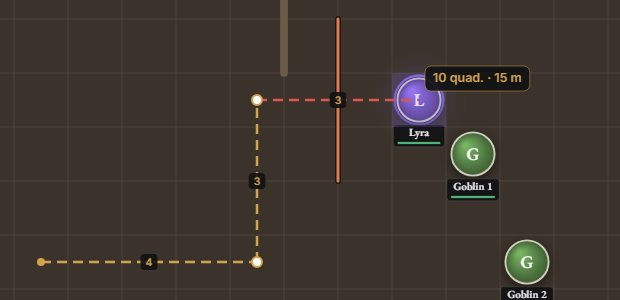
- Segure o token com o botão esquerdo e arraste.
- Sem soltar, clique com o botão direito: fica um ponto no centro do quadrado. Continue arrastando e marque quantos pontos quiser.
- Cada trecho mostra a sua distância, e a régua perto do token mostra o total.
- Solte o botão esquerdo: o token vai para o destino e fica o rastro do caminho.
- Backspace (ainda segurando) desfaz o último ponto.
- Trecho que atravessa parede ou porta fechada fica vermelho. Cortar o canto de uma sala na diagonal também conta.
- Sem espiar: se o caminho atravessa uma parede que tapa a visão (parede absoluta, cobertura total ou porta trancada; porta fechada destrancada deixa passar), o jogador fica sem visão enquanto arrasta: a tela escurece e fica só o token e o caminho vermelho. Recuou ou marcou um ponto pela porta, a visão volta. Se soltar assim, o token volta para onde estava. Muros baixos (meia e três quartos) só ficam vermelhos, porque dá para ver por cima. Quem é baixo (ou mais baixo que o muro) segue a mesma regra da visão.
- As setas do teclado também param na parede. O mestre pode mover qualquer token através das paredes.
- Na regra alternada 1-2-1, a contagem das diagonais continua de um trecho para o outro.
- Depois de mover, todos veem o rastro do caminho com o total por alguns segundos. O mestre escolhe quanto tempo em Mesa → Regras automáticas → Rastro do movimento (0 desliga).
- A Régua R aceita os mesmos pontos com o botão direito, para medir sem mover ninguém.
- Sem segurar nada, o botão direito continua movendo a câmera.
Visível, vulto ou invisível Mestre
No painel do token, em Para os jogadores:
| Opção | O que os jogadores veem |
|---|---|
| Visível | O token normal. |
| Vulto | Só uma silhueta escura com "?": sem imagem, nome, vida nem condições. Dá para atacar; no chat, na mira e no combate o nome aparece como "Vulto". |
| Invisível | Nada. Só você vê o token (apagado). |
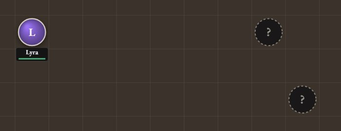
Você continua vendo o token normal, com um aro tracejado escuro para lembrar que, para os jogadores, ele é um vulto.
Criaturas que voam Mestre
No painel do token, em Voo, marque Voando e diga quantos metros a criatura subiu. Desmarcar põe no chão; marcar de novo volta para a última altura.
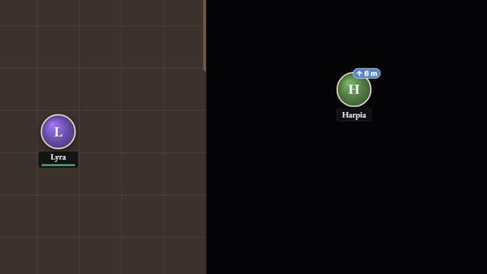
- Visão: quem voa vê e é visto por cima de qualquer muro mais baixo que o topo dele (altura do corpo + altura do voo). A parede absoluta bloqueia sempre, seja qual for a altura.
- Cobertura: só fica escondida a parte do corpo abaixo do topo do muro. Ex.: muro de 3 m, criatura de 1,8 m voando a 2 m: só 1 m do corpo fica atrás do muro (55%), meia cobertura. Voando a 4 m, nenhuma.
- Atacando de cima: quem voa acima de um muro enxerga por cima dele; quanto mais longe do muro o alvo está, menos dele fica escondido.
- Luz: a tocha de quem voa ilumina por cima dos muros mais baixos que ele.
- No mapa, o token ganha a etiqueta ↑ 6 m e uma sombra no chão, para todos que o veem.
Grupos de tokens Mestre
Junte vários tokens num grupo para mudar todos com um clique: a emboscada de três goblins aparece de uma vez.
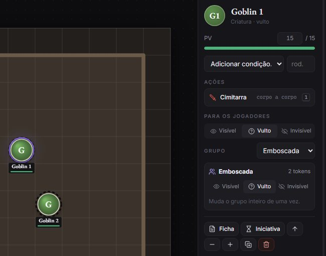
- Selecione um token e, em Grupo, escolha + Novo grupo… e dê um nome.
- Nos outros tokens, escolha esse grupo na mesma lista.
- Use Visível, Vulto ou Invisível no quadro do grupo: vale para todos os tokens dele.
- A aba Camadas lista os grupos da cena: renomeie, mude a visibilidade, centralize a câmera no grupo ou desfaça o grupo (os tokens continuam no mapa).
- Se os tokens do grupo estiverem com visibilidades diferentes, nenhum botão aparece marcado; clicar em um iguala todos.
Preparar a mesa
Desenho, névoa e régua
| Ferramenta | Tecla | Uso |
|---|---|---|
| Selecionar | V | Clica e arrasta tokens. Arrastar no vazio move a câmera. |
| Mover câmera | H | Também funciona com o botão direito ou segurando Espaço. |
| Régua | R | Arraste para medir, em quadrados e na unidade da cena. Botão direito (segurando) marca pontos de passagem. |
| Ping | P | Clique para chamar a atenção de todos para um ponto. |
| Desenho livre, linha, retângulo, círculo | D L B E | Marcar salas, áreas de magia, caminhos. Cor e espessura aparecem na barra ao lado. |
| Borracha | X | Apaga desenhos e paredes. |
| Névoa: revelar / esconder | F G | Mestre Arraste para mostrar ou cobrir partes do mapa. |
A névoa precisa estar ligada em Configurar cena → Névoa de guerra. O mestre vê a névoa transparente; os jogadores veem preto.
Voltar ao topoPreparar a mesa
Luz, paredes e portas Mestre
Com a luz ligada, cada jogador só vê o que está iluminado e à vista do token dele. É assim que um monstro fica escondido atrás da porta até alguém abrir.
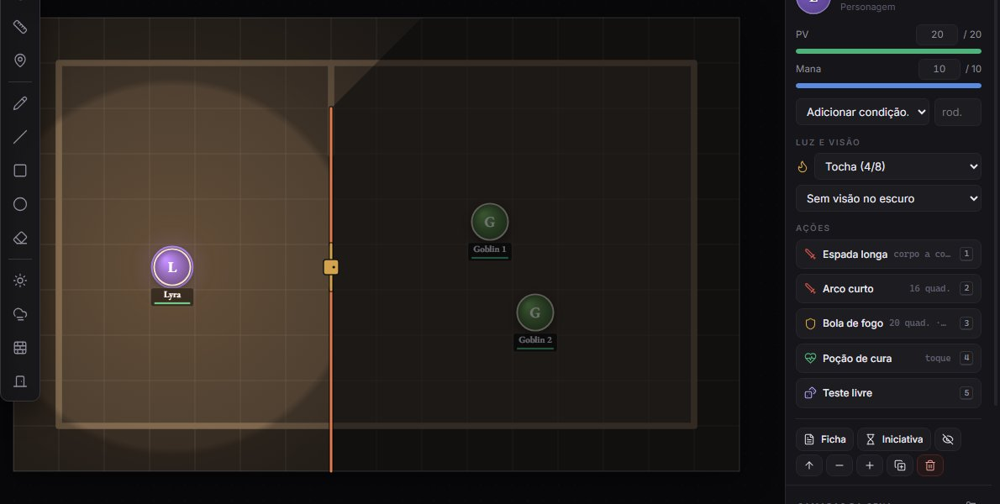
- Sem nenhum token selecionado, ligue Luz e visão dinâmicas na lateral direita e escolha Claro ou Escuro.
- Use Parede W e Porta O: arraste de um canto do grid até outro.
- Muro curvo, caverna, rocha? No quadro da ferramenta Parede, troque Reta por Lápis e desenhe à mão livre. O traço vira uma parede do tipo escolhido. Terminando perto de onde começou, o contorno se fecha. A borracha apaga o traço inteiro, e clicar nele com outro tipo escolhido troca o tipo do traço todo.
- Selecione o token e escolha a luz dele em Luz e visão: vela, Tocha (4/8), lanterna ou fogueira. Ali também ficam a cor, Tremular, a luz em cone e a visão no escuro.
- Para luzes presas ao mapa (lustre, janela, sala acesa) e para escuridão, use a ferramenta Luz U. Veja Pontos de luz e de escuridão.
Os três níveis de luz
| Nível | O que o jogador vê | Com visão no escuro |
|---|---|---|
| Luz plena | Tudo, normalmente | Luz plena |
| Meia luz | Vê, mas escurecido | Luz plena |
| Escuridão | Preto: nada aparece | Meia luz |
A visão no escuro enxerga um nível acima até a distância dela. Quem está em meia luz ou em luz plena pode ser visto e atacado; quem está na escuridão, não.
- Escuro: os jogadores só veem o que uma luz ilumina. Claro: tudo é visível, mas as paredes ainda escondem o outro lado.
- Portas abrem e fecham com um clique no marcador dourado. Os jogadores também podem abrir.
- Porta trancada Mestre: Shift + clique no marcador tranca ou destranca, e clicar no marcador também abre o painel da porta (Aberta/Fechada, Destrancada/Trancada, Apagar). Na ferramenta Porta você escolhe se as novas portas nascem trancadas.
- Destrancada: qualquer um abre e fecha, e dá para passar por ela mesmo fechada (ela continua fechada e tapando a visão).
- Trancada: fica fechada, os jogadores não abrem nem passam (o caminho fica vermelho, sem visão, e o token volta). Só você vê o cadeado; o jogador descobre ao tentar abrir: "A porta está trancada". Se você abrir, ela fica destrancada.
- Contorno no escuro: o jogador vê uma linha clara nas paredes que o personagem enxerga, mesmo sem luz, e as portas em dourado. Assim ele sabe o limite da sala. Paredes fora da vista e debaixo da névoa de guerra continuam escondidas.
- Já desenhou as salas com linhas e retângulos? Configurar cena → Paredes dos desenhos transforma os desenhos em paredes.
- Monstros que o jogador não vê também não podem ser clicados nem atacados por ele.
"Tocha (4/8)" dá luz plena até 4 quadrados e meia luz até 8.
Pontos de luz e de escuridão Mestre
Luzes presas ao mapa, sem precisar de um token: o lustre do salão, a luz da janela, o altar que brilha. E o contrário: um ponto de escuridão.
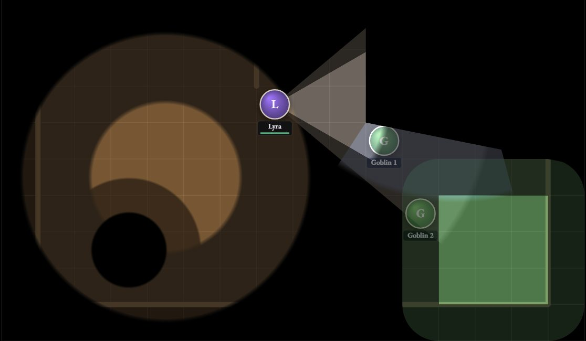
- Escolha a ferramenta Luz U. No quadro ao lado, escolha Luz ou Escuridão e a forma.
- Círculo: clique para pôr (tocha, 4/8) ou arraste para escolher o alcance.
- Cone: clique na origem e arraste para a direção e o alcance (holofote, janela).
- Área: clique em cada canto e feche clicando no primeiro ponto, com dois cliques ou Enter (Backspace desfaz o último ponto). Tudo dentro fica em luz plena por igual.
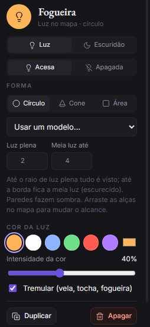
- Clique no marcador para abrir o painel: nome, luz ou escuridão, acesa ou apagada, forma, um modelo pronto (vela, tocha, lanterna, fogueira, holofote, sala acesa), os raios, a direção do cone, a cor, a intensidade da cor e Tremular.
- No mapa: arraste o marcador para mover. A alça branca muda o alcance (no cone, também a direção; Shift gira de 15 em 15°), e a alça colorida muda o raio da luz plena.
- Dois cliques no marcador acendem ou apagam. Delete apaga e Ctrl+D duplica.
- Paredes: o círculo e o cone fazem sombra como a tocha de um token. A área também respeita as paredes: a luz não vaza para o outro lado.
- Escuridão: no miolo nada se vê, nem com tochas, nem de dia. Na borda fica no máximo meia luz. Quem tem visão no escuro vê o miolo como meia luz.
- A cor é só visual: não muda quem vê o quê.
- Os jogadores veem só o efeito. Os marcadores e contornos são seus, e a camada Pontos de luz esconde os marcadores só na sua tela.
- As luzes só fazem efeito com Luz e visão dinâmicas ligada na cena.
Lanterna em cone no token
No painel do token, com uma luz escolhida, marque Em cone: a luz ilumina só à frente. O cone vira sozinho para onde o token andou por último, e as setas do painel apontam para outra direção. O jogador dono do token também pode virar a própria lanterna, mas só o mestre dá ou tira a luz.
Muros baixos e cobertura
São quatro tipos. Com a ferramenta Parede ativa, escolha o tipo no quadro ao lado da barra. Ele vale para as próximas paredes. Clicar numa parede já desenhada troca o tipo dela.
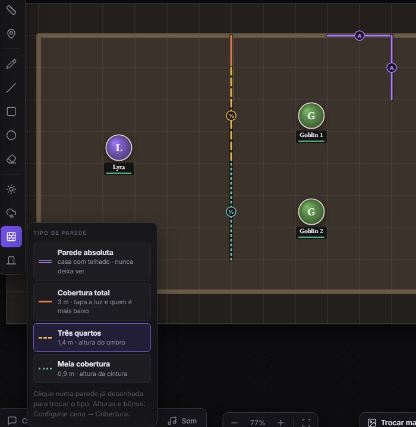
| Tipo | Altura padrão | Visão | Quem está atrás |
|---|---|---|---|
| Parede absoluta (casa com telhado) | sem altura | Corta sempre, para todos | Não pode ser alvo |
| Cobertura total | 3 m | Corta a luz e a visão de quem não é mais alto que a parede | Pela altura: em geral não pode ser alvo; um gigante por cima vê e ataca |
| Três quartos (ombro) | 1,4 m | Corta só para quem não é mais alto que o muro | +5 na Defesa e nos testes de resistência |
| Meia cobertura (cintura) | 0,9 m | Corta só para quem não é mais alto que o muro | +2 na Defesa e nos testes de resistência |
A altura decide. A proteção é a altura do muro dividida pela altura do alvo. Cobrindo 100% ou mais, é cobertura total; a partir de 75%, vale o bônus de três quartos; a partir de 50%, o de meia. A altura da criatura fica na aba Config da ficha; sem ela, vale 1,8 m por quadrado de tamanho.
Quem é baixo não enxerga por cima. Um muro da altura de quem olha (ou mais alto) tapa a visão dele como uma parede total, e ele também não consegue atacar através do muro. A luz passa por cima de qualquer muro baixo.
Um halfling de 1 m entre um muro de 1 m e outro de 2 m não vê nada além dos dois. Um humano de 1,8 m no mesmo lugar vê por cima do muro de 1 m, mas não do de 2 m. Muro de 1,4 m: cobre 78% de um humano (1,8 m) e dá +5. Um goblin de 1,2 m atrás dele tem cobertura total. Um gigante de 3,6 m fica com só 39%: sem bônus.
- Cobertura total é o tipo padrão da ferramenta, como na regra oficial, e as paredes antigas são desse tipo. Use Parede absoluta para casas e torres com telhado: nem um gigante enxerga o lado de dentro.
- Tudo é por cena: Configurar cena → Cobertura muda alturas, limites (75% e 50%) e bônus, ou desliga a cobertura na cena.
- Sombra do muro: quantos quadrados atrás do muro alguém fica fora de vista para quem olha do outro lado (padrão: 3 no três quartos, 1 na meia). Na cena você escolhe como essas criaturas aparecem para os jogadores: Normal (padrão), Vulto (círculo escuro com "?", sem nome nem vida, ainda pode ser atacado) ou Escondido. Cada ficha pode ter a própria regra em Config → Atrás de muro baixo: um ladino que sempre se esconde, um ogro que sempre aparece.
- Encostado no muro: quem está colado no muro ataca por cima dele, e o muro não protege o alvo (dá para desligar na cena).
- Magias em área: a cobertura é medida do ponto de impacto até cada alvo e entra no teste de resistência. Com cobertura total, o alvo não sofre dano.
- A chance de acerto na mira e o resultado no chat já mostram o bônus, por exemplo "contra 18 (cobertura ¾ +5)".
- Altura e regra de visibilidade da ficha só o mestre muda.
Jogar
Ações: ataques, magias e curas
As ações ficam na ficha. Cada uma tem um Tipo, e o tipo decide o que o sistema faz sozinho. Abra a ficha, clique em Nova ação ou no lápis de uma ação existente.
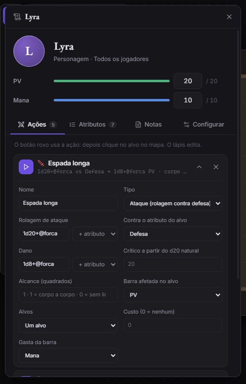
1d20+@forca contra a Defesa do alvo, dano 1d8+@forca.| Tipo | O que o sistema faz |
|---|---|
| Ataque | Rola o ataque contra um atributo do alvo (ex.: Defesa). Se acertar, rola o dano e tira da barra (ex.: PV). |
| Resistência | Cada alvo rola o atributo pedido (ex.: Destreza) contra a CD. Quem falha leva o dano todo; quem passa leva metade ou nada. |
| Dano direto | Rola e aplica em todos os alvos, sem teste. |
| Cura | Rola e soma na barra, sem passar do máximo. |
| Só rolar | Rolagem comum, sem alvo. Bom para testes de perícia. |
Exemplos prontos
Espada longa
- Tipo
- Ataque
- Ataque
1d20+@forca- Contra
Defesa- Dano
1d8+@forca- Alcance
- vazio (corpo a corpo)
Arco curto
- Tipo
- Ataque
- Ataque
1d20+@destreza- Contra
Defesa- Dano
1d6+@destreza- Alcance
16
Bola de fogo
- Tipo
- Resistência
- Resiste com
Destreza- CD
13- Dano
8d6, metade se passar- Alcance
20, área2- Custo
3deMana
Poção de cura
- Tipo
- Cura
- Cura
2d4+2- Barra
PV- Alcance
- vazio (toque)
Fórmulas sem decorar nomes
O passo a passo completo, com receitas de golpes e combos, está em Fórmulas.
Ao lado de cada fórmula (ataque, dano, CD) há o menu + atributo. Escreva o dado, por exemplo 1d20, e escolha Força: a fórmula vira 1d20+@forca. Os campos Contra o atributo do alvo, Alvo resiste com, Barra afetada e Gasta da barra também são menus com a lista da campanha.
Alcance, área e custo
- Alcance (em quadrados):
1= corpo a corpo,16= arco,0= sem limite. Se ficar vazio, o padrão é corpo a corpo para ataques (16 quadrados se o nome tiver arco, besta, arremesso…), 12 para magias e toque para curas. - Área (raio em quadrados): só para resistência, dano e cura. Com área, você escolhe um ponto no mapa em vez de um alvo.
- Custo: quanto a ação gasta e de qual barra. Sem Mana suficiente, a ação é bloqueada.
- Crítico a partir do d20 natural:
19faz a ação dar crítico com 19 ou 20.
Se o seu jogo usa "CA" em vez de "Defesa" ou "Vida" em vez de "PV", troque na lista da campanha (painel Mesa). Fichas e ações passam a oferecer esses nomes.
Jogar
Fórmulas: crie seus ataques e combos Todos
Toda ação tem fórmulas: a rolagem de ataque, o dano, a CD, a cura. Uma fórmula é uma conta com dados, números e atributos da ficha. Se você sabe escrever 1d20+3, já sabe o básico; o resto deste tópico é para montar golpes mais elaborados.
1. Dados e números
Escreva quantidade, a letra d e o número de faces. Some, subtraia e multiplique à vontade.
| Fórmula | O que rola |
|---|---|
1d20 | Um d20. d20 sozinho também vale. |
2d6+3 | Dois d6 somados, mais 3. |
1d8+1d6 | Um d8 mais um d6 (ex.: espada com dano de fogo). |
1d20-2 | Um d20 com penalidade de 2. |
3*(1d4+1) | Rola 1d4+1 uma vez e multiplica por 3. Os parênteses decidem o que vem primeiro. |
1d10/2 | Divide e arredonda para baixo. |
2. Atributos da ficha com @
Um @ antes do nome puxa o valor da ficha de quem usa a ação. Com Força 3, 1d20+@forca rola um d20 e soma 3. Quando a Força subir, o ataque sobe junto, sem editar nada.
- O nome vai em minúsculas e sem acento: Inteligência vira
@inteligencia. Nomes com espaço usam_: Bônus de proficiência vira@bonus_de_proficiencia. - Você não precisa decorar nada: ao lado de cada fórmula há o menu + atributo, que escreve o nome certo. Na aba Atributos da ficha, o nome
@aparece ao lado de cada um. - As barras também valem:
@pvé o PV atual e@pv_maxo máximo. - No campo Teste de atributo,
@valoré o número do atributo que está sendo testado.
Um @ que não existe na ficha vale 0. A ficha avisa em vermelho embaixo do campo, por exemplo: "@forsa não existe nesta ficha (vale 0)".
3. Truques com os dados
| Escreva | Efeito | Uso típico |
|---|---|---|
2d20kh1 | Rola 2, fica com o maior (keep high). | Vantagem |
2d20kl1 | Rola 2, fica com o menor (keep low). | Desvantagem |
4d6kh3 | Rola 4, fica com os 3 maiores. | Gerar atributos |
4d6dl1 | Rola 4 e descarta o menor (drop low). dh descarta o maior. | O mesmo, escrito de outro jeito |
1d6! | Dado que explode: tirou o máximo, rola de novo e soma. | Savage Worlds, golpes de sorte |
(@nivel)d6 | A quantidade de dados vem do atributo. Com Nível 4, rola 4d6. | Ataque furtivo que cresce com o nível |
4dF | Dados Fudge: cada um dá −1, 0 ou +1. | Fate |
d% | Um d100. | Sistemas percentuais |
1d8+2 [fúria] | Texto entre colchetes é só um lembrete, não entra na conta. | Anotar de onde vem cada bônus |
4. Onde cada fórmula entra
| Campo | O que o sistema faz com o resultado |
|---|---|
| Rolagem de ataque | Compara com o atributo de defesa do alvo. Igual ou maior acerta. |
| Dano / Cura | Tira ou soma na barra do alvo. No crítico, os dados dobram sozinhos: 2d6+3 vira 4d6+3. |
| Dificuldade (CD) | O número que o alvo precisa tirar no teste de resistência. Ex.: 8+@inteligencia+2. |
| Fórmula (tipo Só rolar) | Só rola e mostra. Aceita várias partes com nome: Ataque: 1d20+5 | Dano: 2d6. |
| Teste de atributo e Iniciativa | Ficam na aba Atributos. Ex.: 1d20+@valor ou 1d20+@destreza. |
| Chat e campo de PV | /r 2d6+@forca usa o token selecionado. No PV, -2d6 rola e aplica. |
5. Receitas prontas
Copie, cole e ajuste. Todas usam a lista padrão de atributos; crie Nível ou Proficiência na lista da campanha quando a receita pedir.
Ataque com vantagem
- Tipo
- Ataque
- Ataque
2d20kh1+@forca- Dano
1d8+@forca
Golpe poderoso
- Tipo
- Ataque
- Ataque
1d20+@forca-5- Dano
1d12+@forca+10- Ideia
- Erra mais, bate muito mais forte.
Lâmina flamejante
- Tipo
- Ataque
- Ataque
1d20+@forca- Dano
1d8+@forca+1d6 [fogo]- Custo
1deMana
Ataque furtivo
- Tipo
- Ataque
- Ataque
1d20+@destreza- Dano
1d6+@destreza+(@nivel)d6- Precisa
- Atributo Nível
Rajada de mísseis
- Tipo
- Dano direto
- Dano
3*(1d4+1)- Alvos
- Vários · alcance
24 - Custo
2deMana
Onda de choque
- Tipo
- Resistência
- Resiste com
Constituição- CD
8+@inteligencia+@proficiencia- Dano
2d8· área2· alcance6
Cura pela fé
- Tipo
- Cura
- Cura
1d8+@sabedoria- Alcance
6- Custo
2deMana
Último fôlego
- Tipo
- Ataque
- Ataque
1d20+@forca- Dano
1d8+(@pv_max-@pv)/2- Ideia
- Quanto mais ferido, mais dano.
Combos: várias ações em sequência
Cada ação faz uma rolagem de ataque. Um combo de vários golpes vira várias ações na ficha, usadas em seguida pelas teclas 1, 2, 3…
- 1 · Soco: Ataque
1d20+@destreza, dano1d6+@destreza. - 2 · Soco extra: igual ao primeiro, com custo
1deKi. - 3 · Golpe atordoante: Resistência, o alvo resiste com
Constituição, CD8+@sabedoria+2, sem dano. Custo1deKi. O resultado mostra quem falhou, e você aplica a condição Atordoado no painel do token.
Na mesa: selecione o monge e aperte 1, clique no alvo; 2, clique; 3, clique. Para isso funcionar, Ki precisa estar na lista de barras da campanha.
Para outros sistemas
| Sistema | Teste de atributo | Exemplo de dano |
|---|---|---|
| D&D / Tormenta | 1d20+@valor | 1d8+@forca |
| Call of Cthulhu | 1d100 (passa se tirar até o valor) | 1d6+1d4 |
| GURPS | 3d6 | 2d6+1 |
| Savage Worlds | 1d8! | 1d6!+1d8! |
| Fate | 4dF+@valor | — |
| Ordem Paranormal | (@valor)d20kh1 | 1d10+@forca |
Erros comuns
| Escrito | Problema | Certo |
|---|---|---|
1d20+@força | Funciona, mas prefira sem acento para não confundir. | 1d20+@forca |
2d+3 | Falta o número de faces. | 2d6+3 |
(1d6+2 | Parêntese aberto e não fechado. | (1d6+2) |
@niveld6 | O nome gruda no dado. | (@nivel)d6 |
1d20 + forca | Sem @, "forca" não é atributo. | 1d20+@forca |
Quando a fórmula tem erro, o campo fica com a borda vermelha e o motivo aparece embaixo dele.
Voltar ao topoJogar
Atacar passo a passo Todos
- Selecione seu token. No combate, quando chega a sua vez, ele já vem selecionado.
- Escolha a ação no painel do token, ou aperte o número dela: 1 a 9.
- Escolha o alvo. O jogo mostra quem você pode atacar.
Se o alvo estiver longe
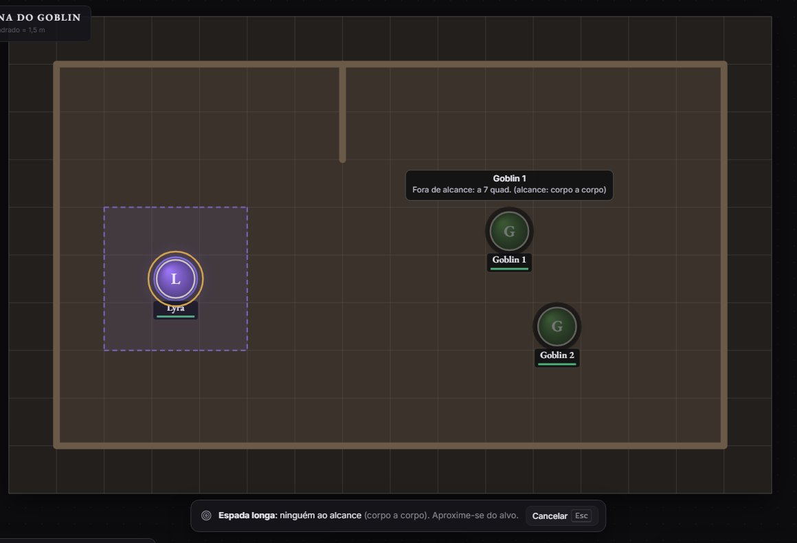
Aperte Esc, aproxime-se e tente de novo.
Com o alvo ao alcance
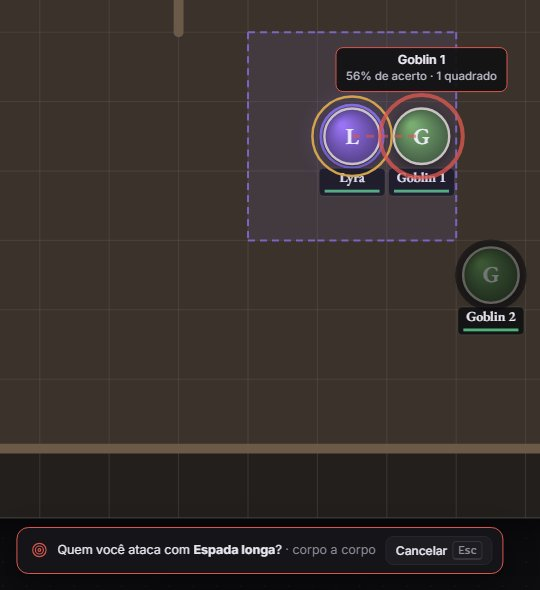
Clique no alvo. O sistema rola o ataque, compara com a Defesa e, se acertar, rola o dano e tira da vida.
O resultado aparece no mapa
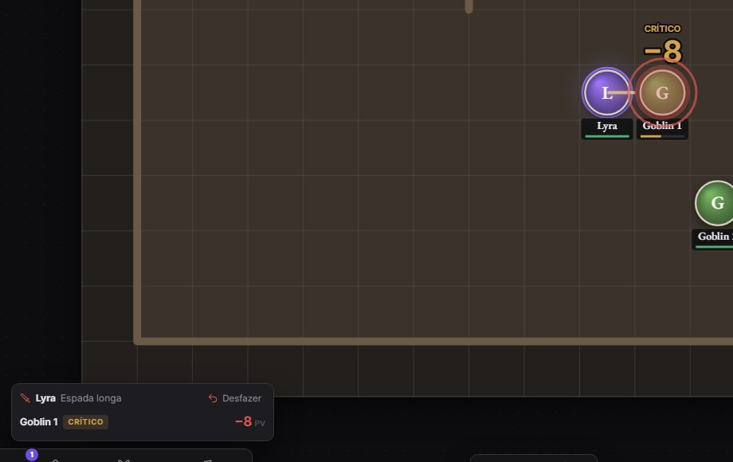
| No mapa | Significa |
|---|---|
| −7 | Acertou e tirou 7 de vida. |
| CRÍTICO | Tirou o número de crítico no d20. O dano dobra. |
| Errou | O ataque não passou da Defesa. |
| Falha crítica | Tirou 1 natural. |
| Caiu | A vida do alvo chegou a 0. |
| +6 | Cura. |
- Ataques miram o outro lado (personagens contra criaturas). Curas miram o próprio grupo. NPCs podem ser alvo dos dois.
- Paredes bloqueiam: não dá para atacar quem está atrás de uma parede.
- O chat guarda todos os dados rolados, para quem quiser conferir. Não é preciso abri-lo para jogar.
Precisa ignorar a regra, como num aliado enfeitiçado? Segure Alt e clique no alvo. Errou alguma coisa? Use Desfazer no cartão: a vida e a Mana voltam.
Jogar
Magias em área Todos
Ações com Área maior que zero não pedem um alvo: pedem um ponto no mapa.
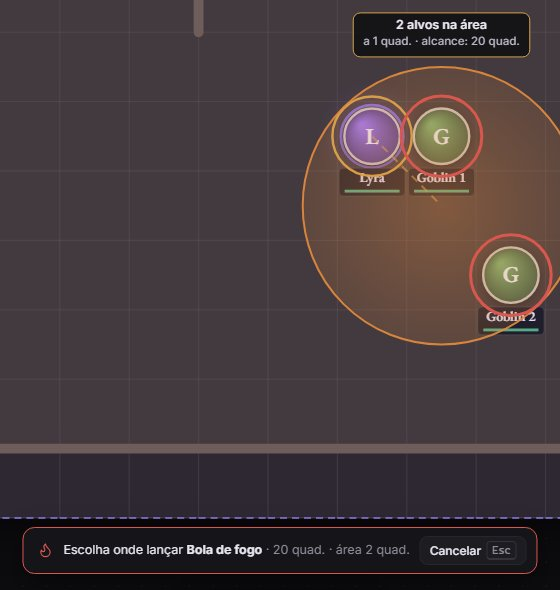
- Escolha a magia (ex.: Bola de fogo).
- Mova o mouse. O círculo mostra a área, e a dica diz quantos alvos estão dentro.
- Clique para lançar. Cada alvo faz o próprio teste de resistência.
- O ponto precisa estar dentro do alcance da magia e à vista.
- Quem está atrás de uma parede fica protegido da explosão.
- Quem lança não é atingido pela própria magia.
Uma ação com Alvos: Vários e área 0 deixa marcar alvos um a um. Clique em cada um e aperte Enter ou Confirmar.
Jogar
Combate e turnos
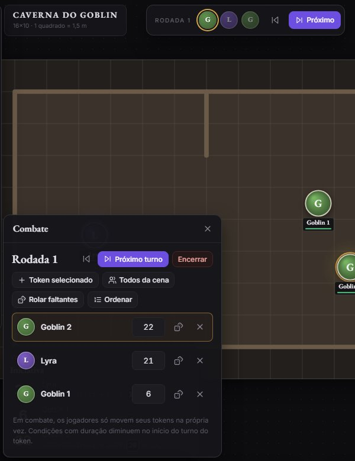
Começar uma luta Mestre
- Abra Combate no dock.
- Clique em Todos da cena, ou selecione tokens e use Token selecionado.
- Clique em Rolar faltantes. A iniciativa de cada um usa a fórmula da ficha (ex.:
1d20+@destreza). - Clique em Iniciar combate.
- Passe a vez com Próximo. Ao fim do último, começa a próxima rodada.
Durante a luta
- Os jogadores só movem os próprios tokens na vez deles.
- Na sua vez, seu token já vem selecionado, com as ações à mão.
- O jogador termina a vez com Encerrar meu turno, no painel Combate.
- As condições com duração perdem uma rodada no início do turno do token.
- Quem sai do mapa ou tem a ficha excluída sai da ordem sozinho. Para tirar alguém na mão, use o × da linha.
Jogar
Regras automáticas Mestre
Clique no nome da campanha no topo e desça até Regras automáticas.
| Opção | Efeito |
|---|---|
| Acerto crítico | Dobra os dados de dano, Dobra o dano total ou Sem crítico. |
| Crítico sempre acerta | Um crítico acerta mesmo contra Defesa alta. |
| 1 natural sempre erra | Tirar 1 no d20 é erro automático. |
| Barras não ficam negativas | A vida para em 0. |
| Jogador só usa ações na própria vez | Fora da vez, o botão avisa "Aguarde a sua vez". |
| Esconder Defesa e PV dos monstros | Os jogadores não veem os números dos monstros, nem a chance de acerto. |
| Rastro do movimento | Quantos segundos o caminho de um movimento fica no mapa para todos (0 = não mostra). |
Jogar
Dados Todos
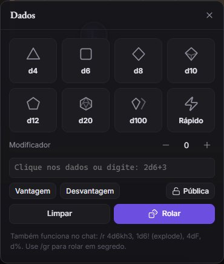
No painel, clique nos dados (cada clique soma um), ajuste o Modificador e clique em Rolar. Pública vira Secreta com um clique: só você e o mestre veem.
No chat, comece com /r. Use /gr para rolar em segredo.
| Escreva | Rola |
|---|---|
/r 2d6+3 | Dois d6 mais 3. |
/r 1d20+@forca | d20 mais a Força do token selecionado. |
/r 2d20kh1 | Vantagem: dois d20, fica o maior. |
/r 2d20kl1 | Desvantagem: fica o menor. |
/r 4d6kh3 | Quatro d6, ficam os três maiores. |
/r 1d6! | d6 que explode: tirou 6, rola de novo e soma. |
/r 4dF | Dados Fudge (−1, 0, +1). |
/r d% | d100. |
/r Ataque: 1d20+5 | Dano: 2d6 | Duas rolagens com nome, no mesmo cartão. |
Jogar
Música e sons Mestre
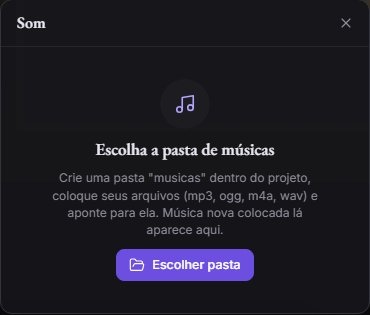
- Junte os arquivos (mp3, ogg, m4a, wav, flac) numa pasta. Subpastas
musicas,ambienteeefeitosviram as categorias sozinhas. - No dock, abra Som e clique em Escolher pasta (Chrome ou Edge). A cada sessão, o navegador pede um clique para reconectar a pasta.
- Toque uma faixa. Ela chega aos jogadores pela própria conexão da mesa.
- Música e Ambiente tocam juntos, cada um com seu volume. Efeitos tocam uma vez (porta, trovão, rugido).
- Trilha da cena: a faixa marcada começa sozinha quando você ativa a cena.
- Sons no mapa: arraste uma faixa para o mapa. Cada jogador ouve mais alto perto do som, do lado certo, e abafado atrás de paredes.
Coloque um som de cachoeira no canto do rio. Os jogadores escutam a água ficar mais alta conforme andam até lá.
Jogadores não veem controles de som. Só precisam clicar uma vez em Ativar som quando o aviso aparecer.
Salas de som
Uma área à prova de som com música própria: a taverna com o alaúde, a cripta em silêncio, o salão do trono com a fanfarra.
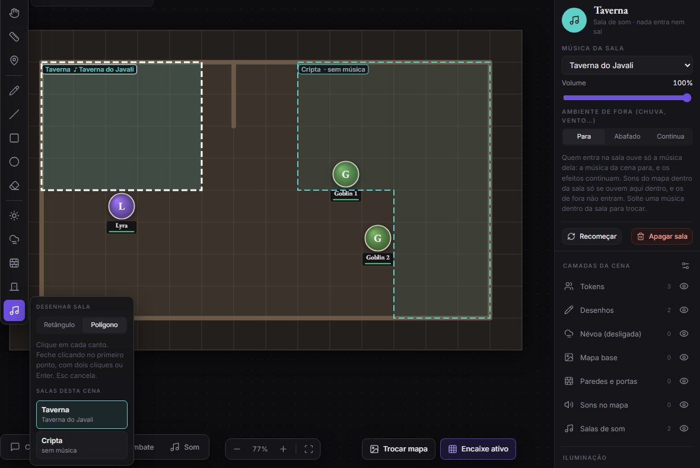
- Escolha a ferramenta Sala de som M na barra da esquerda.
- Arraste um retângulo. Para salas tortas, troque para Polígono e clique em cada canto; feche clicando no primeiro ponto, com dois cliques ou Enter.
- Solte uma música da biblioteca dentro da sala, ou escolha no painel dela. Ela vira a música da sala inteira, com o mesmo volume em qualquer ponto.
| Para quem está dentro da sala | O que acontece |
|---|---|
| Música da cena | Para enquanto ele estiver lá dentro (se a sala tiver música). Ao sair, volta do ponto certo. |
| Ambiente de fora (chuva, vento) | Você escolhe no painel da sala: Para (padrão), Abafado ou Continua. |
| Efeitos | Continuam tocando normalmente. |
| Sons no mapa | Os de dentro só se ouvem dentro; os de fora não entram. |
- Cada jogador ouve pelo próprio token: quem está na taverna ouve a música dela, quem ficou na rua ouve a música da cena. Com vários tokens em lugares diferentes, a sala com música tem prioridade.
- Todos que estão na mesma sala ouvem o mesmo trecho da música. Recomeçar volta a música da sala ao início.
- Você, mestre, ouve pelo centro da câmera: mova a câmera para dentro de uma sala para conferir.
- As salas aparecem só para você, em verde-água tracejado. Clique numa sala com a ferramenta para editar, ou escolha na lista ao lado da barra. Delete apaga a sala selecionada.
- A sala não mexe em luz nem em visão: paredes continuam sendo paredes.
Jogar
Ver como jogador Mestre
No menu ⋯, escolha ver como todos os jogadores ou como um jogador específico. A tela fica igual à deles: sem painéis do mestre, sem tokens ocultos, com a luz e o som do ponto de vista deles. Use para conferir se o monstro está mesmo escondido. Voltar a ser mestre fica no topo.
Voltar ao topoConsulta
Atalhos de teclado
| Tecla | Faz |
|---|---|
| 1 a 9 | Usa a ação de mesmo número do token selecionado. |
| Esc | Cancela a mira ou a ferramenta. |
| Botão direito, segurando um token ou a régua | Marca um ponto de passagem. Backspace desfaz o último. |
| Clicar de novo na ferramenta ativa | Fecha as opções dela e volta para Selecionar. |
| Enter | Confirma alvos marcados (ações com vários alvos). |
| Setas | Movem o token selecionado. |
| Alt | Ao soltar um token: sem encaixe no grid. Ao mirar (mestre): aceita qualquer alvo. |
| Delete | Remove o token selecionado (mestre). |
| V H R P | Selecionar, mover câmera, régua, ping. |
| D L B E X | Desenho livre, linha, retângulo, círculo, borracha. |
| F G W O U M I | Revelar névoa, esconder névoa, parede, porta, luz, sala de som, imagem. |
Consulta
Problemas comuns
Clico no ataque e só aparece um número no chat
A ação está com o tipo Só rolar. Abra a ficha, clique no lápis da ação e mude o Tipo para Ataque. O botão de uma ação de ataque mostra o ícone de espada; o de "Só rolar" mostra um dado. Ações antigas escritas como Ataque: … | Dano: … são convertidas sozinhas ao abrir a campanha.
Aparece "ninguém ao alcance"
O alvo está mais longe que o alcance da ação. Aproxime o token ou aumente o Alcance da ação. Passe o mouse no alvo para ver a distância.
Todo ataque acerta
O alvo não tem o atributo que a ação procura. Se a ação diz "Contra o atributo do alvo: Defesa", abra a ficha do monstro e use + Atributo → Defesa.
Aparece "(fora da lista)" num atributo
O nome não está na lista da campanha (às vezes é só um erro de digitação de uma ficha antiga). Escolha o nome certo no menu, ou o mestre acrescenta o nome no painel Mesa.
Não consigo clicar num token para atacar
Ele está fora do alcance, atrás de uma parede, é do seu próprio grupo ou está escondido no escuro. Passe o mouse sobre ele: a dica diz o motivo. O mestre pode forçar com Alt+clique.
O jogador não consegue mover o token
Há um combate ativo e não é a vez dele, ou a ficha não está liberada para ele. Confira Controlado por na ficha.
Os jogadores não ouvem a música
Cada jogador precisa clicar uma vez em Ativar som; o navegador exige isso. Confira também se o mestre reconectou a pasta no painel Som.
Um jogador caiu da mesa
Ele recarrega a página e entra de novo com o mesmo código. Se foi o mestre que recarregou, os jogadores voltam sozinhos.
Ataquei por engano
O mestre clica em Desfazer no cartão do resultado, ou no mesmo cartão dentro do chat. A vida e a Mana voltam ao que eram.